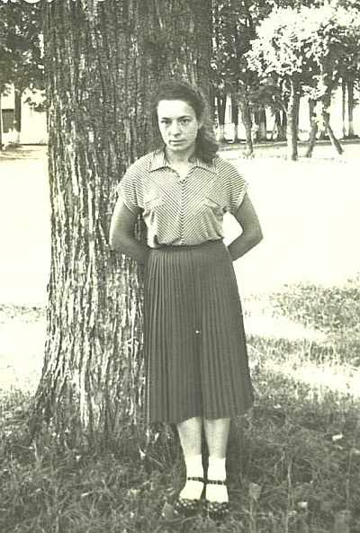
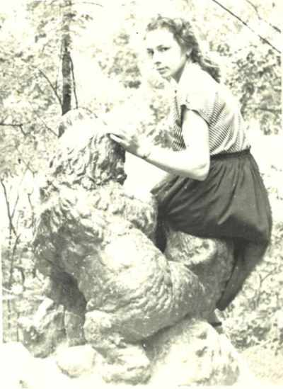
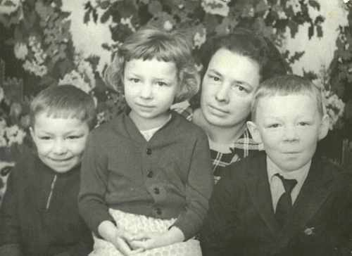

Бахорина (Сакель) Ядвига ИосифовнаРодилась 25.12.1931 в д.Бортяки, Щучинского р-на, Гродненской обл., Беларусь. Трудилась домработницей у прокурора, поваром в детском саду, уборщицей в отделении милиции, укладчицей готовой продукции на хлебопекарне, кухонной работницей в лётной (офицерской) столовой. Была замужем за Бахориным Иваном Анатольевичем. |

  вместе с детьми: Николай(слева), Валентина и Павел |
|
Родители:
Братья/Сестры:
Дети:
|